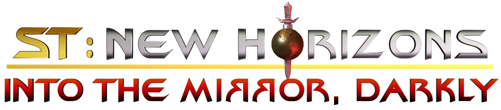
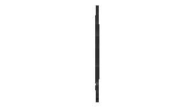

ST NewHorizons.de
Game modification: ST NewHorizons.de
 |

Aktuelle Nachrichten
- PC-Spielgeschichte
- 2019-11-05 - NHV 1911 Into The Mirror, Darkly veröffentlicht
- 2019-10-18 - NHV 1910 Into The Mirror, Darkly veröffentlicht
- 2019-02-22 - NHV 1900 The Great Material Continuum Beta veröffentlicht
- 2018-08-12 - NHV 1900 The Birth of a Federation Beta veröffentlicht
- 2018-05-22 - NHV 1805 The Neutral Zone Beta veröffentlicht
- 2018-02-22 - NHV 1802 Arsenal of Freedom Beta veröffentlicht
- 2017-08-31 - NHV 1708 Assimilation wird als Beta von ST New Horizons veröffentlicht
- 2016-05-20 - Alpha 0.7.0 ST New Horizons veröffentlicht
- Drücken Sie
_
- Videoserie
- 2019-10-11 - Flagships - Feature Spotlight
- 2019-10-10 - Districts - Feature Spotlight
- 2019-10-08 - Planet Subclasses - Feature Spotlight
- Entwicklertagebücher
- 2019-08-15 - Dev diary #8.9 - A class on planet classes posted
- 2019-07-03 - Dev diary #8.8 - Speed, Range and Warp posted
- 2019-06-28 - Dev diary #8.7 - Ships Named Enterprise posted
- 2019-05-31 - Dev diary #8.6 - Schedules and Relics posted
- 2019-05-23 - Dev diary #8.5 - The technical side of things posted
- 2019-04-25 - Dev diary #8.4 - Planetary Specialization posted
- 2019-04-15 - Dev diary #8.2 - The Six New Districts posted
- 2019-04-05 - Dev diary #8 - The new economic overhaul posted
Über diese Site
ST NewHorizons ist eine preisgekrönte Total Conversion Modifikation für Stellaris, die den Spielern die Möglichkeit bietet, aus einer großen Anzahl von Zivilisationen im Star Trek Universum auszuwählen. Es werden viele Kanon Raumschiffe, Spezies, Events und mehr angeboten, um ein ganzheitliches Star Trek-Erlebnis zu bieten. Es wird von der Paradoxical Development Group entwickelt und im Steam Workshop veröffentlicht.
Wichtige Seiten
Erkundung
 Raumeinheiten
Raumeinheiten  Gefallene Reiche
Gefallene Reiche
 Krisen
Krisen  Veranstaltungen
Veranstaltungen  Pre-Warp-Arten
Pre-Warp-Arten
Führung
 Richtlinien
Richtlinien  Erlasse
Erlasse  Wirtschaft
Wirtschaft
 Planetenmanagement
Planetenmanagement  Schiffsdesigner
Schiffsdesigner
 Schiffe
Schiffe  Sternenbasis
Sternenbasis  Technologie
Technologie
Diplomatie
Paradoxical Dev. Group

Status der Mod
Die aktuelle Release-Version ist "NHV 2203 Scorpio Expansion - (e023f0)" und ist kompatibel mit Stellaris 3.3.4 Weitere Informationen und die neuesten Patch-Informationen finden Sie im Paradox-Forum und auf unserer Steam Workshop Seite.
Autor(en): Grinsel, Shaggo, Harel, Kodiak, Russ, Feniks, Kharak, Baahb, UEDCommander, Cutter Slade, Walshicus, Osito, Zoom und viele mehr.
Primäre Spielbare Fraktionen
}}